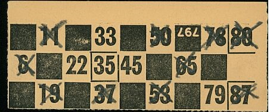

A typical bingo ticket is shown below. It contains 27 spaces, arranged in nine columns by three rows.
Each row contains five numbers and four blank spaces. Each column contains up to three numbers, which are arranged as follows,
The first column contains numbers from 1 to 9,
The second column numbers from 10 to 19,
The third, 20 to 29 and so on up until the last column, which contains numbers from 80 to 90.
Tickets are created as strips of 6, because this allows every number from 1 to 90 to appear across all 6 tickets. If they buy a full strip of six it means that players are guaranteed to mark off a number every time a number is called

Gameplay
The game is presided over by numbers as they are randomly selected, by an electronic random number generator (RNG) and displayed on the screen.
As the numbers are displayed on the screen with an interval of 10 secs,the players have to mark the displayed number on their ticket,if the number exisits in their ticket.
The different winning combinations are:
Early Five - The first player who ha marked five numbers in their single ticket is the winner of 'Early Five'
First
Line – covering a horizontal line first line of five numbers on the ticket.
Second
Line – covering a horizontal line second line of five numbers on the ticket.
Third
Line – covering a horizontal line Third line of five numbers on the ticket.
Full House – covering all fifteen numbers on the ticket.
The winner should yell out by clicking on the Line or House button depending on the prize , if he/she has won any of the above winning combinations.
In all cases, the last number called must be in the winning sequence. If a player does not stop the game in time and the caller calls out the next number the player's winning claim is often invalidated.